Справочник по Angular и React · модуль 1 · первый проект и первый бот
1.5
Списки, ключи,
условный вывод
В этой главе три заявки, записанные в App.tsx по отдельности, заменяются одним списком из пяти заявок, и карточки выводятся из него методом map. Разобрано, зачем React нужен атрибут key у каждой карточки и почему статус в списке меняют, создавая новый список. Затем карточка учится показывать часть содержимого по условию: подробности по кнопке и кнопку «Убрать с доски» только у готовых заявок. В конце над списком появляется фильтр по статусу.
- Категория
- React
- Уровень
- Начальный
- Что понадобится
- Проект
zayavkiпосле главы 1.4 (или архив ниже), запущенныйnpm run dev, браузер Chrome, Edge или Яндекс Браузер - Результат
- Доска выводит пять заявок из списка, раскрывает подробности, убирает готовые заявки и фильтрует их по статусу
Если проекта нет или он в другом состоянии
Архив содержит проект zayavki в том состоянии, с которого начинается глава, — после главы 1.4. Папки node_modules в архиве нет: её создаёт команда npm install по списку пакетов из package.json.
Архив закрыт паролем. После нажатия на кнопку введите пароль — его сообщает преподаватель.
- Распакуйте архив в папку с проектами курса, например
react-kurs. Появится папкаzayavki. Если папка с таким именем там уже есть, сначала переименуйте старую, например вzayavki-staraya. - Откройте папку курса в VS Code: File → Open Folder.
- Откройте терминал (Terminal → New Terminal) и выполните три команды по очереди. Последняя запускает сервер разработки; страница открывается по адресу
http://localhost:5173/.
cd zayavki npm install npm run dev
§1Заявки в одном массиве
РазбираемсяЗачем хранить заявки списком
Сейчас каждая заявка записана в App.tsx отдельным вызовом <RequestCard … />. Статус каждой хранится в отдельном состоянии: status1, status2, status3. Для четвёртой заявки пришлось бы добавить ещё одно состояние и ещё один вызов карточки. Заявок на доске могут быть десятки, и для каждой так не напишешь.
Поэтому данные отделяют от разметки. Все заявки хранятся одним списком. Разметка описывает одну карточку, и React повторяет её для каждой заявки из списка.
В ИТ-отделе заявки записывают в журнал. Это таблица: каждая строка описывает одну заявку. Графы у всех строк одинаковые — номер, что случилось, кабинет, подробности, статус. Строки журнала пронумерованы по порядку. Массив в программе — такой журнал, объект — одна его строка, поля объекта — графы.
Строки журнала нумеруют с единицы, элементы массива — с нуля.
Массив — список значений в квадратных скобках через запятую: ['214', '305', '112']. Каждое значение — элемент массива. У элемента есть номер — индекс. Индексы начинаются с нуля: первый элемент — [0], второй — [1]. Число элементов хранит свойство length.
Объект — набор пар «имя: значение» в фигурных скобках: { id: 1, title: 'Не работает проектор' }. Пары называются полями. Значение поля читают через точку: request.title. Объектом уже были props карточки в главе 1.3.
На схеме — массив заявок, который появится в проекте: пять ячеек, в каждой объект с пятью полями.
Массив initialRequests: пять объектов, у каждого пять полей
проектор id 2
интернет id 3
принтер id 4
компьютер id 5
мышь
элемент [0] — объект
Маленькая цифра в углу ячейки — индекс элемента. Индекс — место в массиве, id — номер самой заявки; при удалении заявки индексы остальных сдвигаются, id остаются прежними.
ДелаемСоздаём файл с заявками
- Создайте файл requests.ts
В проводнике VS Code щёлкните правой кнопкой по папке
src, выберите New File, введите имяrequests.tsи нажмите Enter. Вставьте в файл код ниже и сохраните (Ctrl+S, на macOS Cmd+S).zayavki/src/requests.ts export type Status = 'Новая' | 'В работе' | 'Готово' export type RequestItem = { id: number title: string room: string details: string status: Status } export const initialRequests: RequestItem[] = [ { id: 1, title: 'Не работает проектор', room: '214', details: 'Проектор включается, но изображения на экране нет.', status: 'Новая', }, { id: 2, title: 'Нет интернета', room: '305', details: 'На всех компьютерах в кабинете не открываются сайты.', status: 'В работе', }, { id: 3, title: 'Замятие бумаги в принтере', room: '112', details: 'Принтер пишет «замятие бумаги», лоток пустой.', status: 'Готово', }, { id: 4, title: 'Не включается компьютер', room: '214', details: 'Компьютер преподавателя не реагирует на кнопку питания.', status: 'Новая', }, { id: 5, title: 'Не работает мышь', room: '118', details: 'Курсор не двигается, мышь подключена к компьютеру № 7.', status: 'Новая', }, ] export function nextStatus(status: Status): Status { if (status === 'Новая') { return 'В работе' } return 'Готово' }
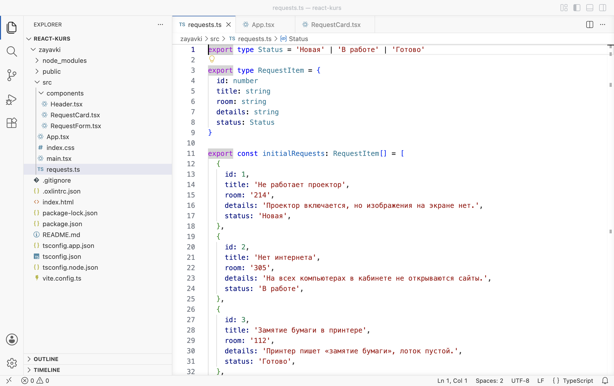
Так должен выглядеть проект: requests.ts лежит в src рядом с App.tsx
Страница в браузере после этого шага не меняется: файл пока никто не подключает.
РазбираемсяЧто записано в requests.ts
Расширение файла .ts, без буквы x: в файле нет разметки JSX, только данные и функция. Ниже — начало файла. Цифры в кружках отмечают строки, под кодом разобрана каждая.
export type Status = 'Новая' | 'В работе' | 'Готово' 1 export type RequestItem = { 2 id: number title: string room: string details: string status: Status } export const initialRequests: RequestItem[] = [ 3 { 4 id: 1, 5 title: 'Не работает проектор', room: '214', details: 'Проектор включается, но изображения на экране нет.', status: 'Новая', },
- 1
Тип
Statusперенесён сюда изRequestCard.tsx: он нужен и карточке, иApp, и файлу с данными. Словоexportделает тип доступным из других файлов. - 2
Тип
RequestItem(«элемент списка заявок») описывает одну заявку: какие у неё поля и какого они типа. Полеid: number— номер заявки, число. Остальные поля совпадают с props карточки. - 3
Константа
initialRequests(«начальные заявки»). ЗаписьRequestItem[]читается как «массив элементов типа RequestItem»: квадратные скобки после типа означают массив. Если в какой-то заявке пропустить поле или написать статус с опечаткой, TypeScript покажет ошибку в этой строке. - 4
Открывающая фигурная скобка — начало первого объекта. Объекты в массиве разделяются запятыми. Запятая стоит и после последнего поля, и после последнего объекта. Так принято в проекте: новую строку можно добавить без правки предыдущей.
- 5
Поле
id— номер, который у каждой заявки свой и не меняется. Он нужен, чтобы отличать заявки друг от друга: у двух заявок может совпасть кабинет и даже название,idне совпадает никогда.
Остальные четыре заявки записаны так же. В конце файла — функция nextStatus из главы 1.4, перенесённая сюда без изменений. Из «Новая» она возвращает «В работе», из остальных статусов — «Готово». Теперь статусы и правило их смены описаны в одном файле.
Данные готовы. Следующий шаг — вывести из массива карточки.
§2Карточки из массива: map и key
РазбираемсяМетод map
Секретарь получает журнал заявок и стопку пустых бланков. Для каждой строки журнала он берёт бланк и переписывает в него графы этой строки. Сколько строк в журнале, столько получается заполненных бланков, а журнал остаётся как был. Метод map — секретарь, функция в скобках — правило, как заполнить бланк по одной строке.
Секретарь может ошибиться или пропустить строку. map вызывает функцию для каждого элемента по порядку и всегда возвращает массив той же длины.
У массива есть метод map («сопоставить»). Он берёт элементы по очереди и для каждого вызывает функцию, которую ему передали. Результаты он собирает в новый массив той же длины. Исходный массив не меняется.
Пример без React: из массива номеров кабинетов получается массив подписей.
const rooms = ['214', '305', '112'] const labels = rooms.map((room) => 'каб. ' + room) console.log(labels) // [ 'каб. 214', 'каб. 305', 'каб. 112' ]
В скобках у map — стрелочная функция из главы 1.4: (room) => 'каб. ' + room. Слева от стрелки её параметр room, справа — что она возвращает. map вызывает её три раза: с '214', с '305' и с '112'. Каждый ответ становится элементом нового массива. Комментарий после // показывает, что напечатает console.log.
map вызывает функцию для каждого элемента
Три элемента на входе — три вызова функции — три элемента на выходе. Массив rooms остаётся прежним.
В React функция для map возвращает разметку карточки. Получается массив карточек, и React выводит их на страницу подряд, как если бы они были записаны в коде одна за другой.
ДелаемВыводим заявки из массива
- Замените содержимое RequestCard.tsx
Откройте
src/components/RequestCard.tsx, выделите весь текст (Ctrl+A), вставьте код ниже и сохраните. Изменилось только начало файла: типStatusтеперь берётся изrequests.ts.zayavki/src/components/RequestCard.tsx import type { Status } from '../requests' type RequestCardProps = { title: string room: string details: string status: Status onNext: () => void } function RequestCard({ title, room, details, status, onNext }: RequestCardProps) { return ( <article className="card"> <div className="card__top"> <span className="card__room">каб. {room}</span> <span className="card__status">{status}</span> </div> <h3>{title}</h3> <p>{details}</p> <button onClick={onNext} disabled={status === 'Готово'}> {status === 'Новая' ? 'Взять в работу' : 'Завершить'} </button> </article> ) } export default RequestCard
- Замените содержимое App.tsx
Откройте
src/App.tsx, замените весь текст кодом ниже и сохраните.zayavki/src/App.tsx import { useState } from 'react' import Header from './components/Header' import RequestForm from './components/RequestForm' import RequestCard from './components/RequestCard' import { initialRequests, nextStatus } from './requests' function App() { const [requests, setRequests] = useState(initialRequests) const newCount = requests.filter((r) => r.status === 'Новая').length function handleNext(id: number) { const updated = requests.map((r) => { if (r.id === id) { return { ...r, status: nextStatus(r.status) } } return r }) setRequests(updated) } return ( <> <Header newCount={newCount} /> <main className="board"> <RequestForm /> <section className="list"> <h2>Заявки</h2> {requests.map((r) => ( <RequestCard title={r.title} room={r.room} details={r.details} status={r.status} onNext={() => handleNext(r.id)} /> ))} </section> </main> </> ) } export default App
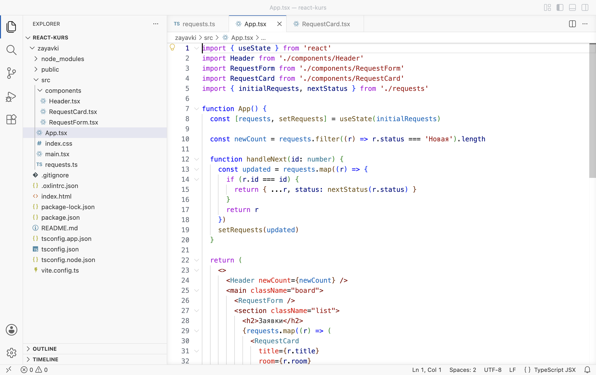
Так должен выглядеть App.tsx: одно состояние requests в строке 8, map в строке 29 - Проверьте страницу
Перейдите в браузер. На доске пять заявок, в шапке «Новых заявок: 3». Кнопки «Взять в работу» и «Завершить» работают, как в главе 1.4.
Так должна выглядеть страница: пять карточек из массива, в шапке число новых — 3
РазбираемсяКак App строит пять карточек
Из App исчезли три состояния и три вызова карточки. Вместо них:
- одно состояние
requestsв строке 8 — массив заявок, начальное значениеinitialRequests; - один вызов
<RequestCard>внутриrequests.map(…)в строках 29–37; - функция
handleNextв строках 12–20 — меняет статус заявки по нажатию кнопки.
Вокруг requests.map(…) стоят фигурные скобки: внутри разметки JSX код JavaScript всегда пишут в фигурных скобках (глава 1.2). Круглые скобки после стрелки нужны, чтобы разметку карточки можно было записать на нескольких строках.
Пошаговый разбор ниже показывает, что происходит при отрисовке App. Кнопки «Дальше» и «Назад» переключают шаги. Слева подсвечены строки, о которых идёт речь. Справа — какие значения лежат в переменных и что появляется на странице.
function App() { const [requests, setRequests] = useState(initialRequests) const newCount = requests.filter((r) => r.status === 'Новая').length function handleNext(id: number) { const updated = requests.map((r) => { if (r.id === id) { return { ...r, status: nextStatus(r.status) } } return r }) setRequests(updated) } return ( <> <Header newCount={newCount} /> <main className="board"> <RequestForm /> <section className="list"> <h2>Заявки</h2> {requests.map((r) => ( <RequestCard title={r.title} room={r.room} details={r.details} status={r.status} onNext={() => handleNext(r.id)} /> ))} </section> </main> </> ) }
- Состояние получает массив
React вызывает функцию
App. При первой отрисовкеuseStateберёт начальное значение — массивinitialRequestsиз файлаrequests.ts— и кладёт его в переменнуюrequests.requestsмассив из 5 заявокid 1
Новаяid 2
В работеid 3
Готовоid 4
Новаяid 5
Новая - Подсчёт новых заявок
Метод
filter(«отобрать») строит новый массив только из тех элементов, для которых условие истинно. Условиеr.status === 'Новая'выполняется для первой, четвёртой и пятой заявки..lengthдаёт их число.id 1
Новаяid 2
В работеid 3
Готовоid 4
Новаяid 5
НоваяnewCount3 - Функция handleNext только объявляется
Здесь записано, что делать при нажатии кнопки, но сама функция сейчас не выполняется. Её вызовет карточка, когда пользователь нажмёт «Взять в работу».
- Шапка получает число
Начинается разметка.
Headerполучает propnewCountсо значением 3 и показывает «Новых заявок: 3». - map: первый вызов
mapберёт элемент[0]и вызывает стрелочную функцию. Параметрrполучает первую заявку. Функция возвращает разметку карточки, в которую подставлены поля этого объекта.id 1id 2id 3id 4id 5r{ id: 1, title: 'Не работает проектор', … }каб. 214Не работает проекторНовая - map: второй вызов
Та же функция вызывается со вторым элементом. Теперь
r— заявка «Нет интернета». Получается вторая карточка; первая уже лежит в новом массиве.id 1id 2id 3id 4id 5r{ id: 2, title: 'Нет интернета', … }каб. 214Не работает проекторНоваякаб. 305Нет интернетаВ работе - map: вызовы с третьего по пятый
Так же обрабатываются оставшиеся три элемента. Функция вызывается пять раз — столько, сколько элементов в массиве.
id 1id 2id 3id 4id 5проекторНоваяинтернетВ работепринтерГотовокомпьютерНоваямышьНовая - Результат map — массив разметок
Выражение
requests.map(…)в фигурных скобках равно массиву из пяти карточек. React выводит элементы этого массива внутри<section>друг за другом. Если вinitialRequestsдобавить шестую заявку, на странице появится шестая карточка, а кодAppне изменится.
ДелаемСмотрим консоль и линтер
- Откройте консоль браузера
Нажмите F12 (на macOS — Cmd+Option+J), выберите вкладку Console и обновите страницу (F5).
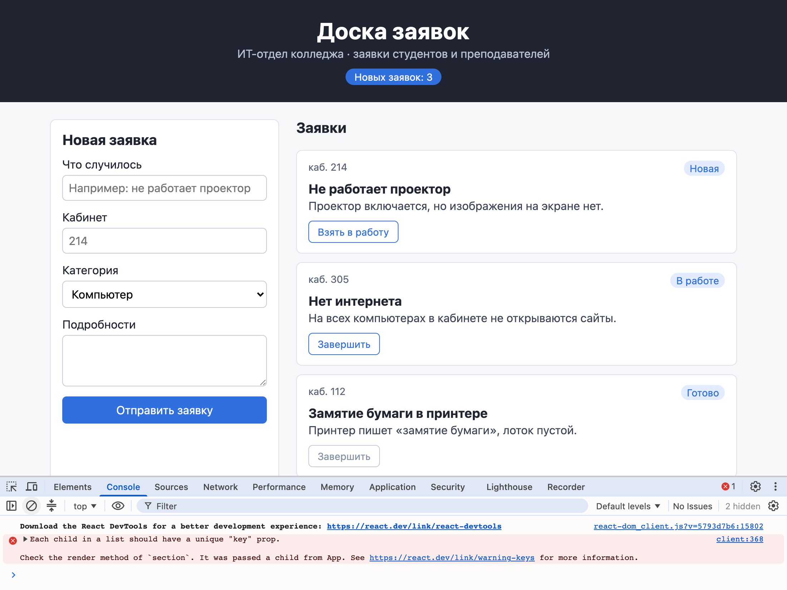
В консоли: Each child in a list should have a unique "key" prop - Запустите линтер
В VS Code откройте второй терминал: Terminal → New Terminal. Первый терминал занят сервером разработки. Выполните команду:
Терминал cd zayavki && npm run lint
Знаки
&&между командами означают «выполнить вторую, если первая прошла успешно»: сначала переход в папку проекта, затем проверка.npm run lint: react(jsx-key) — у элемента внутри map нет key
РазбираемсяЧто такое key
Сообщение в консоли Each child in a list should have a unique "key" prop переводится как «у каждого элемента списка должен быть уникальный prop key». Вторая строка уточняет место: список выводится внутри section, а передан он из компонента App.
Линтер пишет о том же: Missing "key" prop for element in iterator — «у элемента внутри перебора нет prop key». Адрес App.tsx:29:21 — строка 29, символ 21: начало стрелочной функции внутри map.
Ключ (key) — атрибут элемента списка, по которому React отличает элементы друг от друга. Его читает сам React: в props карточки он не попадает. Когда массив меняется, React сравнивает новый список карточек с прежним по ключам:
- карточку с тем же ключом React считает той же самой — обновляет её текст и сохраняет её состояние;
- карточку с новым ключом создаёт;
- карточку, ключа которой в новом списке нет, удаляет со страницы.
Поэтому ключ должен быть разным у всех элементов списка и не меняться, пока элемент существует. У заявок такой признак уже есть — поле id.
ДелаемДобавляем ключ
- Добавьте строку key
В
App.tsxпоставьте курсор в конец строки 30<RequestCard, нажмите Enter и наберитеkey={r.id}. Сохраните файл. Фрагмент после правки:zayavki/src/App.tsx · строки 29–38 {requests.map((r) => ( <RequestCard key={r.id} title={r.title} room={r.room} details={r.details} status={r.status} onNext={() => handleNext(r.id)} /> ))} - Проверьте консоль
Обновите страницу (F5). Ошибки о key в консоли больше нет.
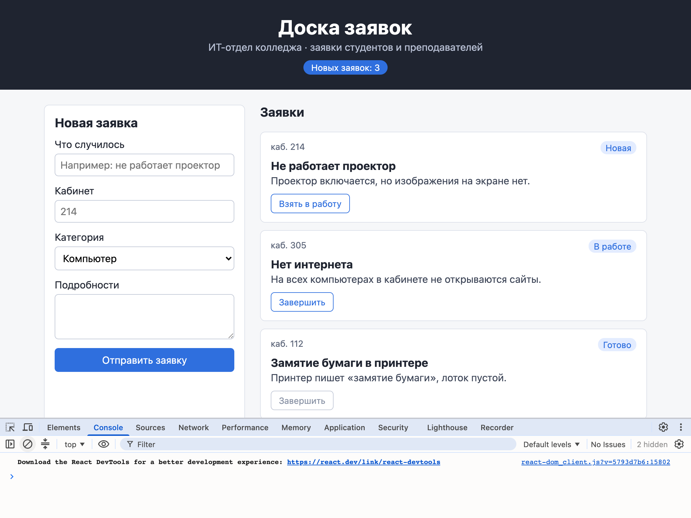
Так должна выглядеть консоль после обновления страницы: ошибки о key нет
Список выводится из массива. Следующий шаг — разобраться, как кнопка меняет статус заявки внутри массива.
§3Изменение заявки в массиве
Статус заявки теперь — поле объекта внутри массива requests. Прямой способ поменять его — найти нужную заявку и записать ей новый статус. Опыт ниже показывает, что из этого получается.
ДелаемОпыт: меняем массив на месте
- Замените содержимое App.tsx версией для опыта
Изменилась только функция
handleNext: новые строки 13–16 подсвечены. Замените весь текстApp.tsxи сохраните.zayavki/src/App.tsx · опыт import { useState } from 'react' import Header from './components/Header' import RequestForm from './components/RequestForm' import RequestCard from './components/RequestCard' import { initialRequests, nextStatus } from './requests' function App() { const [requests, setRequests] = useState(initialRequests) const newCount = requests.filter((r) => r.status === 'Новая').length function handleNext(id: number) { const index = requests.findIndex((r) => r.id === id) requests[index].status = nextStatus(requests[index].status) console.log('Статус в массиве:', requests[index].status) setRequests(requests) } return ( <> <Header newCount={newCount} /> <main className="board"> <RequestForm /> <section className="list"> <h2>Заявки</h2> {requests.map((r) => ( <RequestCard key={r.id} title={r.title} room={r.room} details={r.details} status={r.status} onNext={() => handleNext(r.id)} /> ))} </section> </main> </> ) } export default App
- Нажмите «Взять в работу» в первой карточке
Обновите страницу (F5), чтобы все заявки вернулись к начальным статусам. Консоль браузера должна быть открыта. Нажмите «Взять в работу» в первой карточке.
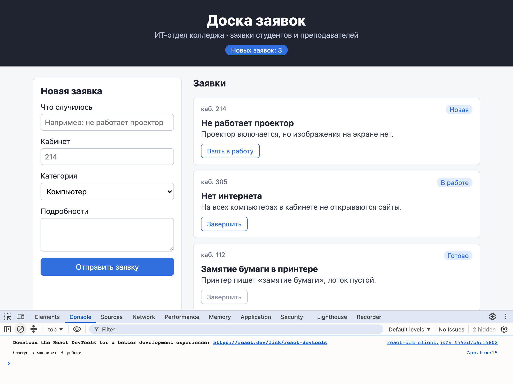
В консоли «Статус в массиве: В работе», на карточке по-прежнему «Новая», в шапке — 3 - Запустите линтер
Во втором терминале выполните
npm run lint. Терминал уже находится в папкеzayavki, поэтомуcd zayavkiне нужен; на снимке команда набрана в новом терминале, вместе с переходом в папку.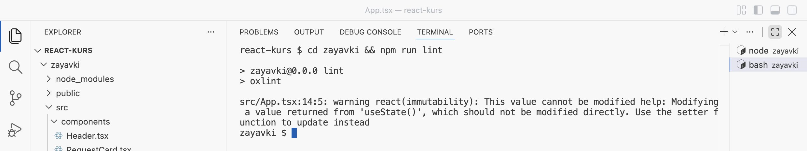
npm run lint: react(immutability) — значение из useState нельзя менять напрямую
РазбираемсяПочему страница не изменилась
В опыте handleNext делает четыре действия:
findIndexнаходит номер заявки с нужнымidв массиве;- в поле
statusэтой заявки записывается следующий статус; - новый статус печатается в консоль;
- тот же массив передаётся в
setRequests.
Консоль показывает «Статус в массиве: В работе» — значит, статус внутри массива изменился. А карточка по-прежнему «Новая». Причина — в правиле, по которому React запускает новую отрисовку. React сравнивает значение из setRequests с текущим. Для массива проверяется одно: это тот же массив или другой. Что внутри, React не сравнивает. В setRequests передан тот же массив, поэтому React считает, что ничего не изменилось, и страницу не обновляет.
Секретарь принимает на подпись только новые экземпляры приказа. Если вернуть ему тот же лист, на котором ручкой исправлено одно слово, он видит знакомый лист и откладывает его: этот приказ уже подписан. Чтобы правка дошла до подписи, приказ перепечатывают на новый лист.
Секретарь заметит исправление, если присмотрится. React содержимое не просматривает и проверяет только, тот же это массив или другой.
Линтер сообщает о той же ошибке для строки 14: This value cannot be modified — «это значение нельзя изменять». Подсказка в конце: значение из useState() не меняют напрямую, для обновления используют функцию изменения.
Отсюда правило для всех состояний: значение состояния заменяют новым значением. Для массива это значит: построить новый массив с нужным изменением и передать его в setRequests.
ДелаемВозвращаем правильную версию
- Замените содержимое App.tsx
Это версия из §2 с ключом; строки 13–19 с правильной функцией
handleNextподсвечены. Замените весь текст и сохраните.zayavki/src/App.tsx import { useState } from 'react' import Header from './components/Header' import RequestForm from './components/RequestForm' import RequestCard from './components/RequestCard' import { initialRequests, nextStatus } from './requests' function App() { const [requests, setRequests] = useState(initialRequests) const newCount = requests.filter((r) => r.status === 'Новая').length function handleNext(id: number) { const updated = requests.map((r) => { if (r.id === id) { return { ...r, status: nextStatus(r.status) } } return r }) setRequests(updated) } return ( <> <Header newCount={newCount} /> <main className="board"> <RequestForm /> <section className="list"> <h2>Заявки</h2> {requests.map((r) => ( <RequestCard key={r.id} title={r.title} room={r.room} details={r.details} status={r.status} onNext={() => handleNext(r.id)} /> ))} </section> </main> </> ) } export default App
- Проверьте кнопку
Обновите страницу (F5) и нажмите «Взять в работу» в первой карточке. Статус меняется, в шапке «Новых заявок: 2».
Так должна выглядеть страница: первая заявка «В работе», в шапке «Новых заявок: 2»
РазбираемсяКак handleNext строит новый массив
function handleNext(id: number) { const updated = requests.map((r) => { if (r.id === id) { return { ...r, status: nextStatus(r.status) } } return r }) setRequests(updated) }
handleNext не трогает старый массив. Она строит новый массив updated через map, а затем передаёт его в setRequests.
Функция внутри map на этот раз записана в фигурных скобках и со словом return. Так пишут, когда внутри нужно условие if. Для каждой заявки она проверяет id:
idсовпал — вернуть новый объект с другим статусом;- не совпал — вернуть ту же заявку
rбез изменений.
Новый объект собирается записью { ...r, status: nextStatus(r.status) }. Три точки перед r — оператор расширения (spread). Он копирует в новый объект все поля r. Поле, записанное после него, заменяет скопированное поле с тем же именем. Пример без React:
const card = { id: 1, title: 'Не работает проектор', status: 'Новая' } const copy = { ...card, status: 'В работе' } console.log(card) // { id: 1, title: 'Не работает проектор', status: 'Новая' } console.log(copy) // { id: 1, title: 'Не работает проектор', status: 'В работе' } console.log(card === copy) // false
{ ...card, status: 'В работе' }: копия с одним изменённым полем
...card копирует три поля, status: 'В работе' заменяет одно из них. Исходный объект card не изменился, card === copy даёт false: это два разных объекта.
Разбор ниже повторяет по шагам то, что произошло при нажатии «Взять в работу» в первой карточке.
function App() { const [requests, setRequests] = useState(initialRequests) const newCount = requests.filter((r) => r.status === 'Новая').length function handleNext(id: number) { const updated = requests.map((r) => { if (r.id === id) { return { ...r, status: nextStatus(r.status) } } return r }) setRequests(updated) } return ( <> <Header newCount={newCount} /> <main className="board"> <RequestForm /> <section className="list"> <h2>Заявки</h2> {requests.map((r) => ( <RequestCard key={r.id} title={r.title} room={r.room} details={r.details} status={r.status} onNext={() => handleNext(r.id)} /> ))}
- Карточка вызывает onNext
Кнопка первой карточки вызывает функцию
onNext. Это стрелочная функция, созданная для первой заявки при отрисовке:() => handleNext(r.id), гдеr.idравен 1.id1 - map, элемент [0]: id совпал
r.id === id—1 === 1, условие истинно. Функция возвращает новый объект: все поля первой заявки и статусnextStatus('Новая'), то есть «В работе».id 1
В работе…………строится массив updated
- map, элементы [1]–[4]: id не совпал
Для остальных заявок
r.id === idложно, выполняетсяreturn r: в новый массив кладётся та же самая заявка, без копирования.id 1
В работеid 2
В работеid 3
Готовоid 4
Новаяid 5
Новая - Новый массив — в состояние
В
updated— новый массив: первый элемент новый, остальные прежние.setRequests(updated)получает массив, которого раньше не было, и React запускает новую отрисовку. Старый массивrequestsпри этом не менялся.requestsстарый массивupdatedновый массив - Повторная отрисовка App
React вызывает
Appзаново.useStateвозвращает новый массив,filterнаходит две новые заявки.newCount2 - Страница обновляется
mapснова строит пять карточек. React сравнивает их с прежними по ключам и меняет на странице только то, что отличается: статус и кнопку первой карточки и число в шапке.проекторВ работеинтернетВ работепринтерГотовокомпьютерНоваямышьНовая
РазбираемсяКак считается число новых заявок
Строка 10 считает новые заявки методом filter («отобрать»). Он тоже вызывает функцию для каждого элемента. Если функция вернула true, элемент попадает в новый массив. Если false — не попадает. Пример без React:
const statuses = ['Новая', 'В работе', 'Готово', 'Новая'] const onlyNew = statuses.filter((s) => s === 'Новая') console.log(onlyNew) // [ 'Новая', 'Новая' ] console.log(onlyNew.length) // 2
filter: из четырёх статусов остаются два
statuses
onlyNew — новый массив, length = 2
Перечёркнуты элементы, для которых условие s === 'Новая' ложно. У map новый массив всегда той же длины, у filter — такой или короче.
Список и счётчик работают. Следующий шаг — показывать часть карточки только при определённом условии.
§4Условный вывод
РазбираемсяДва способа выводить разметку по условию
Над дверью студии висит табло «Идёт запись». Оно горит, только когда включён микрофон, и гаснет вместе с ним; надпись на табло всегда одна. Светофор на переходе показывает один из двух сигналов: красный или зелёный. В интерфейсе встречаются оба случая: элемент либо выводится, либо нет, или выводится один из двух вариантов.
Погасшее табло остаётся на стене. Элемент, который по условию не выводится, на странице отсутствует совсем.
В пяти карточках подробности занимают половину высоты списка: удобнее показывать их по кнопке «Подробнее». У готовых заявок кнопка «Завершить» выключена, и на её месте нужна кнопка «Убрать с доски». В обоих случаях часть разметки выводится только при каком-то условии. Это называется условным выводом.
Инструкцию if внутри разметки JSX писать нельзя (глава 1.4). Вместо неё используют две записи:
| Запись | Что выводит | Когда использовать |
|---|---|---|
{условие && <p>…</p>} | Абзац, если условие истинно; ничего, если ложно | Элемент либо есть, либо его нет |
{условие ? <A /> : <B />} | A, если условие истинно; B, если ложно | Выбор одного из двух вариантов |
Как читается первая запись на примере {open && <p>Подробности</p>}:
openравноtrue— результат выражения абзац, и он появляется на странице;openравноfalse— результатfalse, аfalseReact на страницу не выводит.
Вторая запись, тернарный оператор условие ? A : B, знакома по главе 1.4. Там он выбирал текст кнопки. Так же он выбирает, какую из двух кнопок вывести.
ДелаемПодробности по кнопке и удаление заявки
- Добавьте стили
Откройте
src/index.css, вставьте правила в самый конец файла и сохраните.zayavki/src/index.css · в конец файла .card__actions { display: flex; gap: 8px; margin-top: 12px; } .card__actions button { margin-top: 0; } .card__actions .card__more { border-color: #c4cad8; color: #3d4557; } .empty { padding: 24px; border: 1px dashed #c4cad8; border-radius: 8px; color: #5b6478; text-align: center; }.card__actionsставит кнопки карточки в ряд,.card__moreделает кнопку «Подробнее» серой,.emptyрисует пунктирную рамку вокруг сообщения о пустом списке. - Замените содержимое RequestCard.tsx
zayavki/src/components/RequestCard.tsx import { useState } from 'react' import type { Status } from '../requests' type RequestCardProps = { title: string room: string details: string status: Status onNext: () => void onRemove: () => void } function RequestCard({ title, room, details, status, onNext, onRemove }: RequestCardProps) { const [open, setOpen] = useState(false) return ( <article className="card"> <div className="card__top"> <span className="card__room">каб. {room}</span> <span className="card__status">{status}</span> </div> <h3>{title}</h3> {open && <p>{details}</p>} <div className="card__actions"> <button className="card__more" onClick={() => setOpen(!open)}> {open ? 'Скрыть' : 'Подробнее'} </button> {status === 'Готово' ? ( <button onClick={onRemove}>Убрать с доски</button> ) : ( <button onClick={onNext}>{status === 'Новая' ? 'Взять в работу' : 'Завершить'}</button> )} </div> </article> ) } export default RequestCard
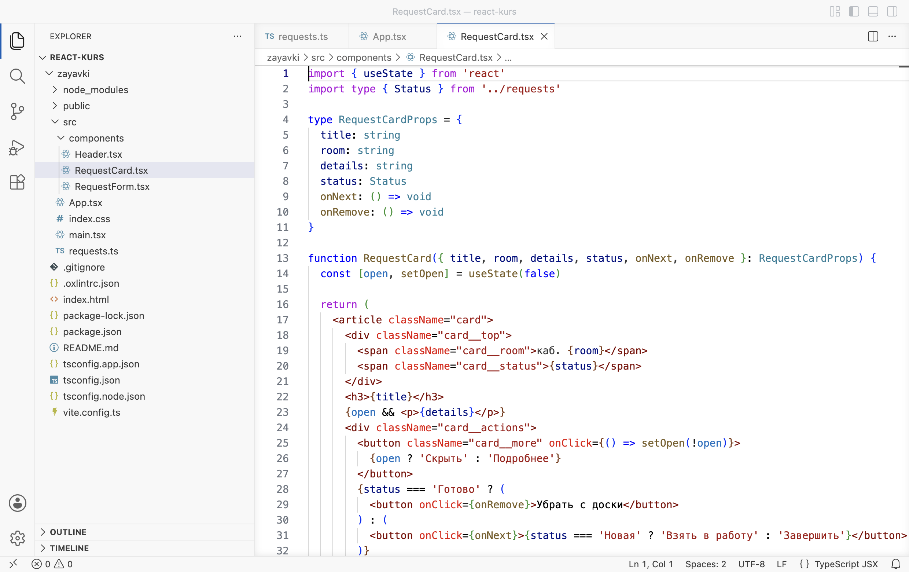
Так должен выглядеть RequestCard.tsx: состояние open в строке 14, условный вывод в строках 23 и 28–32 - Замените содержимое App.tsx
В
Appдобавлены функцияhandleRemove, сообщение о пустом списке и proponRemoveу карточки.zayavki/src/App.tsx import { useState } from 'react' import Header from './components/Header' import RequestForm from './components/RequestForm' import RequestCard from './components/RequestCard' import { initialRequests, nextStatus } from './requests' function App() { const [requests, setRequests] = useState(initialRequests) const newCount = requests.filter((r) => r.status === 'Новая').length function handleNext(id: number) { const updated = requests.map((r) => { if (r.id === id) { return { ...r, status: nextStatus(r.status) } } return r }) setRequests(updated) } function handleRemove(id: number) { setRequests(requests.filter((r) => r.id !== id)) } return ( <> <Header newCount={newCount} /> <main className="board"> <RequestForm /> <section className="list"> <h2>Заявки</h2> {requests.length === 0 && <p className="empty">Заявок нет</p>} {requests.map((r) => ( <RequestCard key={r.id} title={r.title} room={r.room} details={r.details} status={r.status} onNext={() => handleNext(r.id)} onRemove={() => handleRemove(r.id)} /> ))} </section> </main> </> ) } export default App
- Обновите страницу
Нажмите F5. У всех карточек подробности скрыты, у заявки про принтер вместо «Завершить» — «Убрать с доски».
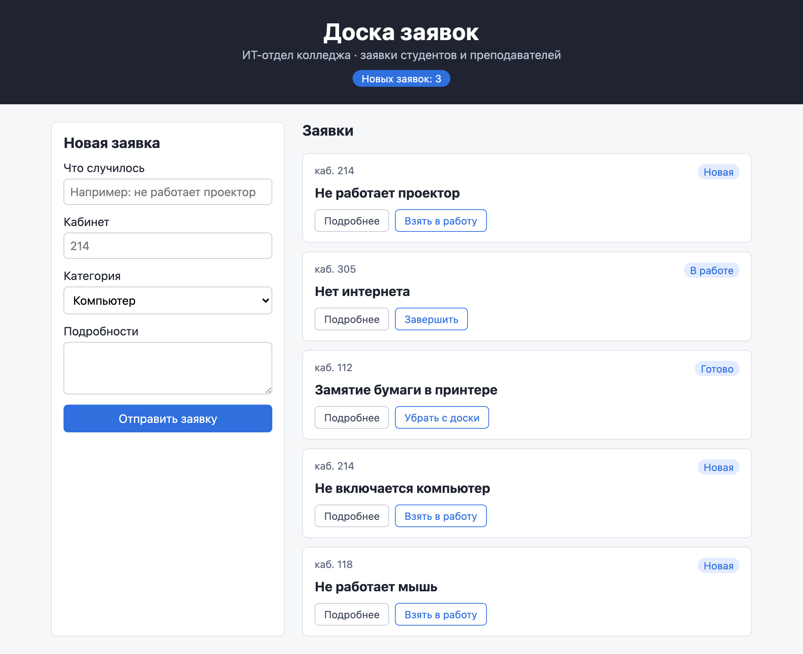
До щелчка: подробностей нет, у готовой заявки — «Убрать с доски» - Раскройте первую карточку
Нажмите «Подробнее» в первой карточке. Появились подробности, кнопка сменилась на «Скрыть».
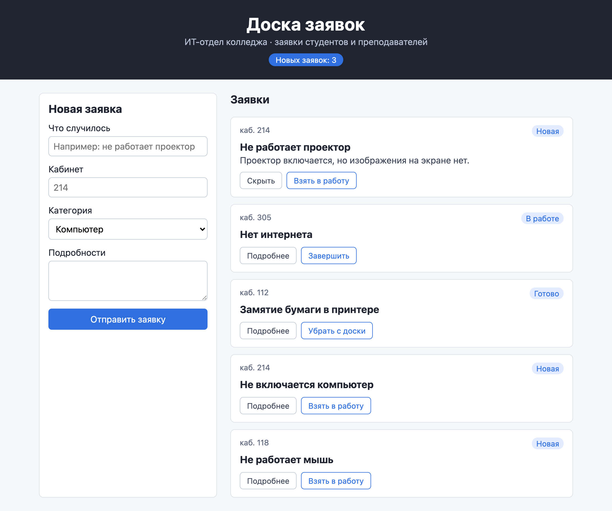
После щелчка: у первой карточки подробности и кнопка «Скрыть» - Уберите готовую заявку
Нажмите «Убрать с доски» у заявки про принтер. На доске осталось четыре заявки.
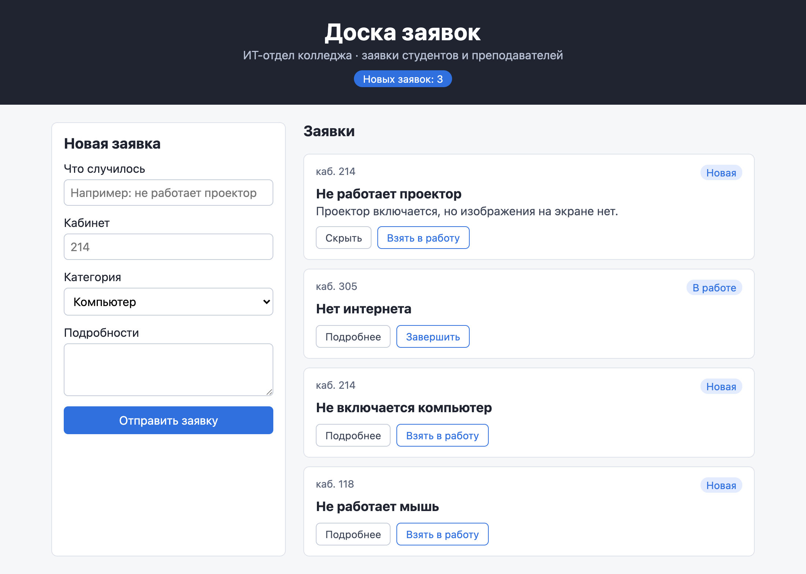
Так должна выглядеть страница: заявки про принтер нет, осталось четыре
РазбираемсяЧто изменилось в карточке
function RequestCard({ title, room, details, status, onNext, onRemove }: RequestCardProps) { const [open, setOpen] = useState(false) 1 return ( <article className="card"> <div className="card__top"> <span className="card__room">каб. {room}</span> <span className="card__status">{status}</span> </div> <h3>{title}</h3> {open && <p>{details}</p>} 2 <div className="card__actions"> <button className="card__more" onClick={() => setOpen(!open)}> 3 {open ? 'Скрыть' : 'Подробнее'} 4 </button> {status === 'Готово' ? ( 5 <button onClick={onRemove}>Убрать с доски</button> ) : ( <button onClick={onNext}>{status === 'Новая' ? 'Взять в работу' : 'Завершить'}</button> )} </div>
- 1
У карточки снова своё состояние —
open, «раскрыта ли карточка». Начальное значениеfalse: подробности скрыты. Это значение нужно только самой карточке.Appи шапка от него не зависят, поэтому поднимать его в родителя не нужно. - 2
Абзац с подробностями выводится через
&&: есть, когдаopenистинно, и отсутствует, когда ложно. - 3
Знак
!— логическое «не»:!trueравноfalse,!falseравноtrue.setOpen(!open)записывает в состояние противоположное значение, поэтому одна кнопка и раскрывает, и скрывает подробности. - 4
Текст кнопки выбирается тернарным оператором из главы 1.4: «Скрыть» у раскрытой карточки, «Подробнее» у скрытой.
- 5
Тернарный оператор выбирает между двумя кнопками. У готовой заявки выводится «Убрать с доски» с обработчиком
onRemove, у остальных — прежняя кнопка сonNext. Варианты обёрнуты в круглые скобки, чтобы каждый можно было записать на отдельной строке. Атрибутdisabledбольше не нужен: у готовой заявки кнопки перевода статуса нет совсем.
РазбираемсяУдаление и пустой список
function handleRemove(id: number) { setRequests(requests.filter((r) => r.id !== id)) }
handleRemove убирает заявку так же, как handleNext меняет статус: строит новый массив. Знак !== означает «не равно». filter оставляет заявки, у которых id не равен переданному, — все, кроме удаляемой.
handleRemove(3): заявка с id 3 не проходит условие r.id !== 3, в новом массиве четыре заявки
Карточки с ключом 3 в новом списке нет, и React убирает её со страницы.
Строка 33 в App.tsx — {requests.length === 0 && <p className="empty">Заявок нет</p>} — выводит сообщение, когда в массиве не осталось заявок. Пока заявки есть, сравнение даёт false, и сообщения нет.
Короткая запись {requests.length && …} выглядит похоже, но при пустом массиве выводит на страницу цифру 0. Выражение 0 && … равно 0, а число React выводит, в отличие от false. Слева от && ставят сравнение, которое даёт true или false: requests.length === 0, requests.length > 0.
Карточка показывает части по условию. Последнее, что нужно доске, — фильтр по статусу.
§5Фильтр по статусу
РазбираемсяЧто будет на доске
В Google Таблицах или Excel фильтр по столбцу «Статус» скрывает строки с другими статусами. Сами строки остаются в таблице: если снять фильтр, они снова видны. Состояние filter работает так же: массив requests не меняется, меняется только то, какие заявки выводятся.
В таблице фильтр настраивают мышью в меню столбца. Здесь правило отбора записано в коде, а кнопки только меняют значение filter.
Над списком появятся четыре кнопки: «Все», «Новая», «В работе», «Готово». Выбранная кнопка закрашена, в списке только заявки с этим статусом. Для этого в App понадобятся:
- второе состояние
filter— какая кнопка выбрана; - массив
visible— заявки, которые нужно показать. Он вычисляется изrequestsиfilter.
ДелаемДобавляем фильтр
- Добавьте стили кнопок
В самый конец
src/index.cssдобавьте правила и сохраните.zayavki/src/index.css · в конец файла .filters { display: flex; flex-wrap: wrap; gap: 6px; } .filters button { padding: 5px 12px; border: 1px solid #c4cad8; border-radius: 16px; background: #ffffff; color: #3d4557; font: inherit; font-size: 14px; cursor: pointer; } .filters button.active { border-color: #2f6fde; background: #2f6fde; color: #ffffff; } - Замените содержимое App.tsx
zayavki/src/App.tsx import { useState } from 'react' import Header from './components/Header' import RequestForm from './components/RequestForm' import RequestCard from './components/RequestCard' import { initialRequests, nextStatus, type Status } from './requests' type Filter = 'Все' | Status const FILTERS: Filter[] = ['Все', 'Новая', 'В работе', 'Готово'] function App() { const [requests, setRequests] = useState(initialRequests) const [filter, setFilter] = useState<Filter>('Все') const newCount = requests.filter((r) => r.status === 'Новая').length const visible = filter === 'Все' ? requests : requests.filter((r) => r.status === filter) function handleNext(id: number) { const updated = requests.map((r) => { if (r.id === id) { return { ...r, status: nextStatus(r.status) } } return r }) setRequests(updated) } function handleRemove(id: number) { setRequests(requests.filter((r) => r.id !== id)) } return ( <> <Header newCount={newCount} /> <main className="board"> <RequestForm /> <section className="list"> <h2>Заявки</h2> <div className="filters"> {FILTERS.map((f) => ( <button key={f} className={f === filter ? 'active' : ''} onClick={() => setFilter(f)}> {f} </button> ))} </div> {visible.length === 0 && <p className="empty">Заявок с таким статусом нет</p>} {visible.map((r) => ( <RequestCard key={r.id} title={r.title} room={r.room} details={r.details} status={r.status} onNext={() => handleNext(r.id)} onRemove={() => handleRemove(r.id)} /> ))} </section> </main> </> ) } export default App
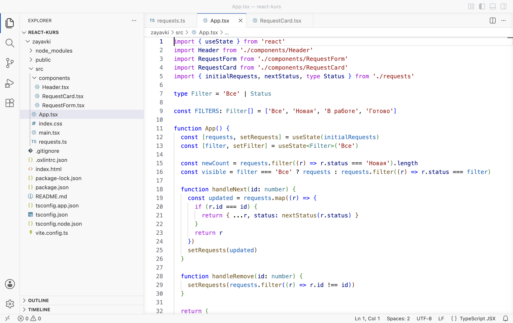
Так должен выглядеть App.tsx: тип Filter и массив FILTERS до App, два состояния и visible в строках 12–16 - Выберите фильтр «Новая»
Обновите страницу (F5): на доске снова пять заявок. Нажмите «Новая» — остаются три новые заявки.
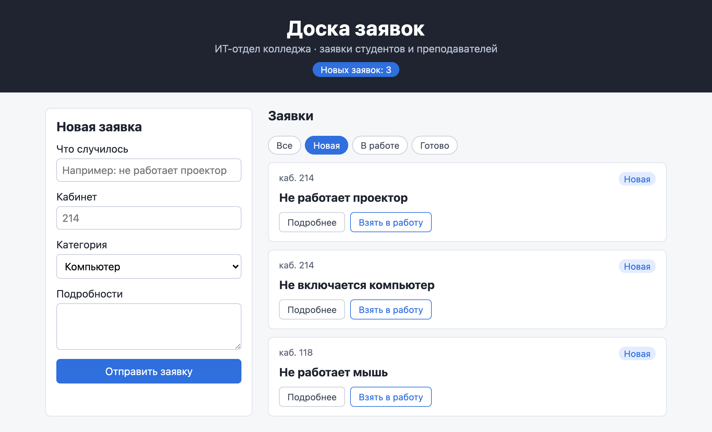
Фильтр «Новая»: три заявки, кнопка «Новая» закрашена - Проверьте пустой список
Нажмите «Все», затем «Убрать с доски» у заявки про принтер, затем «Готово». Готовых заявок не осталось, вместо карточек — сообщение.
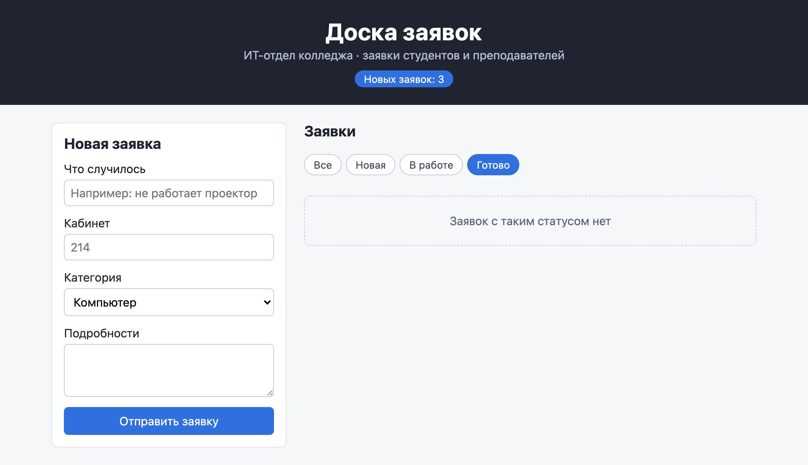
Фильтр «Готово» после удаления единственной готовой заявки: сообщение о пустом списке
РазбираемсяЧто добавилось в App.tsx
type Filter = 'Все' | Status (строка 7) описывает значение фильтра: «Все» или один из трёх статусов. Массив FILTERS (строка 9) перечисляет кнопки по порядку. Он записан вне App, потому что никогда не меняется. Имя набрано заглавными буквами — так в JavaScript обозначают постоянные наборы значений.
useState<Filter>('Все') (строка 13) создаёт второе состояние. Тип в угловых скобках нужен, как в главе 1.4: без него TypeScript решил бы, что в filter может лежать любая строка.
Строка 16 вычисляет visible. При фильтре «Все» это весь массив requests, иначе — результат filter по статусу. Как и newCount, visible вычисляется заново при каждой отрисовке; в состоянии он не хранится. Поэтому после удаления заявки и после смены фильтра он всегда верный.
Кнопки фильтра тоже выводятся через map — из массива FILTERS (строки 40–44). Ключ кнопки — сама строка f: названия фильтров разные и не меняются. Запись className={f === filter ? 'active' : ''} даёт выбранной кнопке класс active, остальным — пустую строку. Правило .filters button.active красит кнопку с этим классом в синий цвет.
function App() { const [requests, setRequests] = useState(initialRequests) const [filter, setFilter] = useState<Filter>('Все') const newCount = requests.filter((r) => r.status === 'Новая').length const visible = filter === 'Все' ? requests : requests.filter((r) => r.status === filter) function handleNext(id: number) { const updated = requests.map((r) => { if (r.id === id) { return { ...r, status: nextStatus(r.status) } } return r }) setRequests(updated) } function handleRemove(id: number) { setRequests(requests.filter((r) => r.id !== id)) } return ( <> <Header newCount={newCount} /> <main className="board"> <RequestForm /> <section className="list"> <h2>Заявки</h2> <div className="filters"> {FILTERS.map((f) => ( <button key={f} className={f === filter ? 'active' : ''} onClick={() => setFilter(f)}> {f} </button> ))} </div> {visible.length === 0 && <p className="empty">Заявок с таким статусом нет</p>} {visible.map((r) => ( <RequestCard key={r.id} title={r.title} room={r.room} details={r.details} status={r.status} onNext={() => handleNext(r.id)} onRemove={() => handleRemove(r.id)} /> ))} </section>
- Кнопка вызывает setFilter
У кнопки «Новая» обработчик
() => setFilter(f), гдеfравно'Новая'. Функция изменения сохраняет новое значение фильтра и запускает отрисовкуApp.filter'Новая' - Состояния при новой отрисовке
requestsне менялся — те же пять заявок.filterтеперь равен «Новая».requests5 заявокfilter'Новая' - Вычисляется visible
Фильтр не «Все», поэтому выполняется
requests.filter((r) => r.status === filter). Остаются три заявки.id 1
Новаяid 2
В работеid 3
Готовоid 4
Новаяid 5
Новаяvisible3 заявки - Кнопки фильтра
FILTERS.mapвыводит четыре кнопки. Для «Новая» сравнениеf === filterистинно, кнопка получает классactiveи закрашивается. - Сообщение о пустом списке
visible.length === 0—3 === 0, ложно. Сообщения нет. - Карточки
mapпроходит по массивуvisibleи строит три карточки. Две карточки, которых нет вvisible, React убирает со страницы. В массивеrequestsони остаются: при нажатии «Все» снова появятся пять карточек.проекторНоваякомпьютерНоваямышьНовая
Доска готова. Остаётся проверить на опыте, что будет, если ключом взять номер элемента в массиве.
§6Опыт: ключ — номер в массиве
Функция для map может принимать второй параметр — индекс элемента. Его иногда ставят ключом: key={index}. Ошибка о key в консоли тогда исчезает, и пока список не меняется, всё работает. Опыт показывает, что происходит при удалении заявки.
ДелаемОпыт с ключом-индексом
- Замените ключ
В
App.tsxвыделите строки 47–49 — от{visible.map((r) => (доkey={r.id}— и вставьте вместо них код ниже. Сохраните.zayavki/src/App.tsx · опыт, строки 47–49 {visible.map((r, index) => ( <RequestCard key={index} - Раскройте четвёртую карточку
Обновите страницу (F5), чтобы вернуть все пять заявок. Нажмите «Подробнее» в четвёртой карточке — «Не включается компьютер».
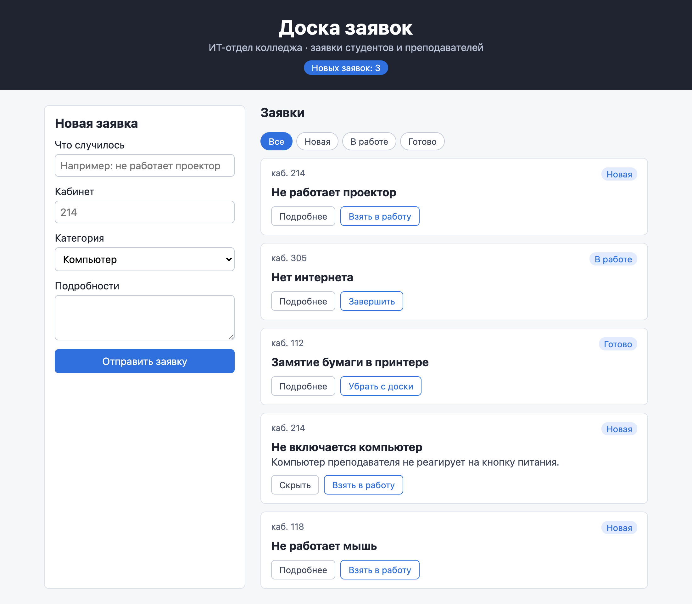
Раскрыта четвёртая карточка — «Не включается компьютер» - Уберите заявку про принтер
Нажмите «Убрать с доски» у третьей карточки. Подробности теперь открыты у «Не работает мышь», а «Не включается компьютер» свёрнута.
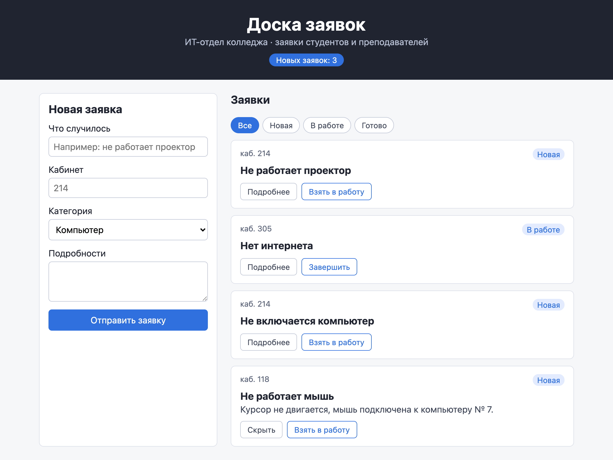
После удаления раскрыта карточка «Не работает мышь», хотя раскрывали «Не включается компьютер»
РазбираемсяПочему раскрылась чужая карточка
Состояние open React хранит для каждой карточки отдельно и находит карточку по ключу. Проследим ключи:
- до удаления «Не включается компьютер» стояла на месте
[3]и имела ключ 3; - после удаления принтера все следующие заявки сдвинулись на одно место: «компьютер» стал
[2], «мышь» —[3]; - в новом списке снова есть ключ 3, и React отдаёт карточке с этим ключом прежнее состояние
open = true. Эта карточка теперь — «мышь».
Чьё состояние получает карточка после удаления заявки 3
key 0проекторkey 1интернетkey 2принтерkey 3компьютер▾key 4мышь
key 0проекторkey 1интернетkey 2компьютерkey 3мышь▾
key 1проекторkey 2интернетkey 4компьютер▾key 5мышь
Значок ▾ — раскрытая карточка (open = true). Слева ключи-индексы до удаления. В середине индексы после сдвига: ключ 3 достался «мыши», и она получила чужое состояние. Справа ключи из id: у «компьютера» ключ 4 до и после удаления, состояние осталось при нём.
В гардеробе пальто выдают по номерку, который висит на крючке вместе с пальто. Допустим, вместо номерков считают крючки по порядку: «ваше — четвёртое слева». Если одно пальто снять и сдвинуть остальные, четвёртым слева окажется чужое. Индекс — порядковое место, id — номерок.
В гардеробе пальто сами не сдвигаются. В массиве после удаления элемента все следующие элементы получают индекс на единицу меньше.
ДелаемВозвращаем ключ id
- Верните ключ id
В
App.tsxвыделите строки 47–49 и вставьте вместо них код ниже. Сохраните.zayavki/src/App.tsx · строки 47–49 {visible.map((r) => ( <RequestCard key={r.id} - Повторите опыт
Обновите страницу, раскройте «Не включается компьютер», уберите заявку про принтер. Раскрытой осталась та карточка, которую раскрывали.
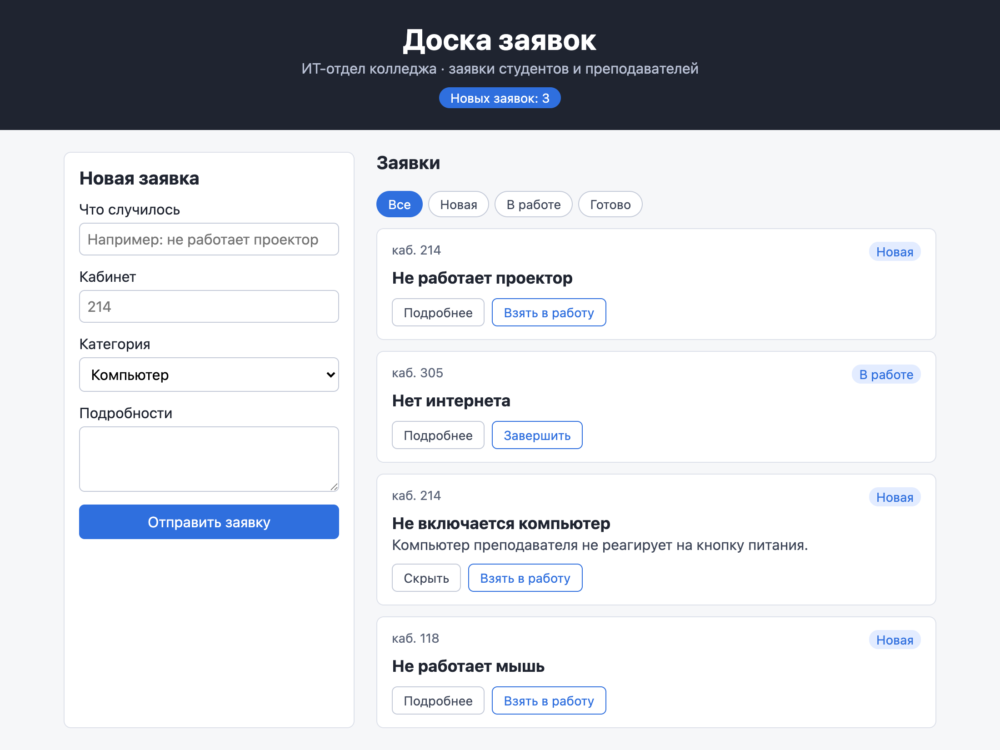
С ключом id раскрытой остаётся «Не включается компьютер»
РазбираемсяКак выбирать ключ
Правила выбора ключа:
- значение разное у всех элементов одного списка;
- значение не меняется у элемента, пока он существует;
- значение берётся из самих данных — обычно это
idиз базы или с сервера.
Индекс подходит, только если список никогда не меняется: из него не удаляют элементы, не добавляют их в начало или середину и не сортируют. Случайное число вида key={Math.random()} не подходит совсем. При каждой отрисовке ключи будут новыми, и React будет пересоздавать все карточки, теряя их состояние.
§7Частые ошибки
Сообщения ниже получены в проекте zayavki: ошибки типов — командой tsc -b, предупреждения — командой npm run lint, ошибки React — в консоли браузера.
| Что видно | Почему | Что сделать |
|---|---|---|
Консоль: Each child in a list should have a unique "key" prop.Линтер: react(jsx-key): Missing "key" prop for element in iterator | У элемента, который возвращает функция в map, нет атрибута key | Добавить key={r.id} первым атрибутом |
Консоль: Encountered two children with the same key | У двух элементов списка одинаковый ключ, например повторяется id в данных | Проверить, что id в массиве не повторяются |
Кнопка нажимается, в консоли новое значение, страница не меняется. Линтер: react(immutability): This value cannot be modified | Массив или объект из состояния изменён на месте и тот же массив передан в функцию изменения | Построить новый массив через map или filter, изменённый объект — через { ...r, поле: значение } |
| После удаления или сортировки раскрыта не та карточка, текст в поле ввода оказался в другой карточке | Ключом служит индекс элемента | Ключ — id из данных |
На месте пустого списка выводится цифра 0 | Слева от && число: {list.length && …} | Записать сравнение: {list.length > 0 && …} |
Type 'void[]' is not assignable to type 'ReactNode' | Функция в map записана с фигурными скобками и без return: (r) => { <RequestCard … /> } ничего не возвращает | Заменить фигурные скобки круглыми или добавить return |
Property 'onRemove' is missing in type '{ … }' but required in type 'RequestCardProps' | Карточке не передана функция onRemove | Добавить onRemove={() => handleRemove(r.id)} |
Module '"./components/RequestCard"' has no exported member 'Status'. | Тип импортируется из карточки, а он перенесён в requests.ts | Импортировать из './requests' (в карточке — из '../requests') |
§8Проверьте себя
Что возвращает [1, 2, 3].map((n) => n * 10) и меняется ли исходный массив?
Новый массив [10, 20, 30]. Исходный массив остаётся [1, 2, 3]: map его не меняет.
Чем filter отличается от map?
map возвращает массив той же длины, где каждый элемент — результат функции. filter возвращает массив из исходных элементов, для которых функция вернула true. Он такой же длины или короче.
Зачем React нужен key и почему для заявок выбран id?
По ключу React находит, какая карточка нового списка соответствует какой карточке прежнего. Такую карточку он обновляет и сохраняет её состояние. id у каждой заявки свой и не меняется при удалении, добавлении и сортировке. Индекс при удалении сдвигается.
Почему после requests[0].status = 'Готово'; setRequests(requests) страница не обновляется?
React сравнивает новое значение состояния с текущим и для массива проверяет, тот же это массив или другой. Передан тот же массив, поэтому новой отрисовки нет. Нужно передать новый массив, построенный через map.
Что даст { ...r, room: '301' }, если r — первая заявка?
Новый объект со всеми полями первой заявки, у которого room равен '301'. Сам r не изменится.
Почему visible не хранится в отдельном состоянии?
Он полностью вычисляется из двух состояний — requests и filter. При каждой отрисовке App он пересчитывается и всегда соответствует им. Отдельное состояние пришлось бы обновлять при удалении заявки, смене статуса и смене фильтра, и его легко забыть обновить.
Добавьте к фильтру счётчик: «Новая (3)», «В работе (1)». Что нужно изменить?
В FILTERS.map вычислить число заявок для каждой кнопки и вывести его рядом с названием:
- внутри функции для
mapпосчитатьconst count = f === 'Все' ? requests.length : requests.filter((r) => r.status === f).length; функцию придётся записать с фигурными скобками иreturn; - в кнопке вывести
{f} ({count}); - проверить, что числа меняются после «Взять в работу» и «Убрать с доски».
Шпаргалка
const list: RequestItem[] = [{ id: 1, … }]{list.map((r) => <Card key={r.id} … />)}list.filter((r) => r.status === 'Новая')list.map((r) => r.id === id ? { ...r, status } : r)list.filter((r) => r.id !== id){open && <p>…</p>}{done ? <A /> : <B />}className={f === filter ? 'active' : ''}Итог главы
Однотипные данные хранят массивом объектов, а разметку описывают для одного элемента и выводят для всех методом map. Каждому элементу списка нужен атрибут key — постоянный и уникальный признак из данных, обычно id. По нему React сопоставляет новый список с прежним и сохраняет состояние карточек. Индекс в качестве ключа ломает это сопоставление при удалении и перестановке. Массив и объект из состояния заменяют новыми. Новый массив строят через map или filter, изменённый объект — через оператор расширения { ...r, поле: значение }. Если изменить массив на месте, React не запустит отрисовку. Условный вывод записывают выражениями: && — элемент есть или нет, тернарный оператор — один из двух вариантов. Значения, которые вычисляются из состояния, как newCount и visible, в состояние не записывают. Доска выводит заявки из массива, раскрывает подробности, убирает готовые заявки и фильтрует список по статусу.
Источники
- react.dev — Rendering Lists
- react.dev — Conditional Rendering
- react.dev — Updating Arrays in State
- react.dev — Updating Objects in State
- react.dev — Preserving and Resetting State
- MDN — Array.prototype.map()
- MDN — Array.prototype.filter()
- MDN — Spread syntax